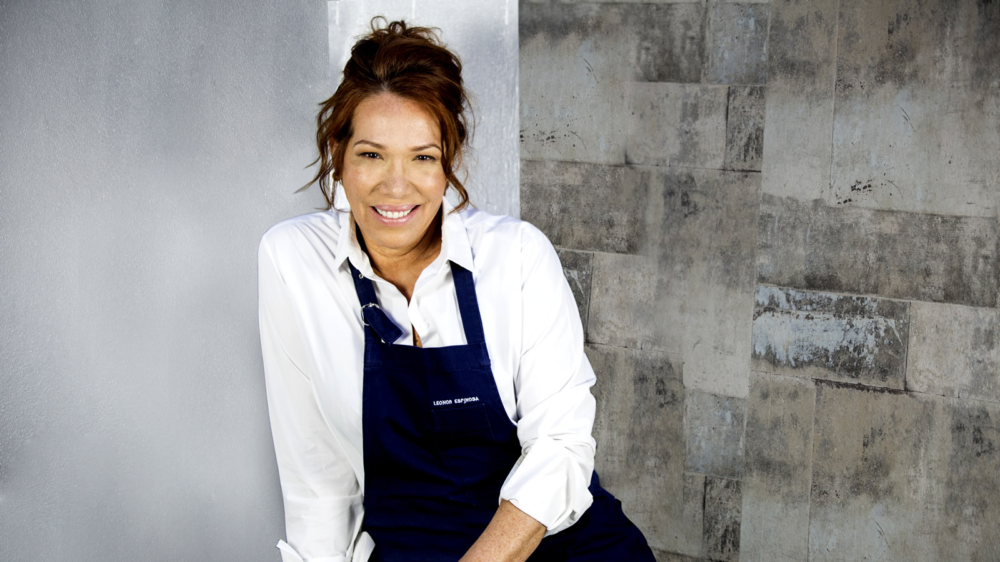
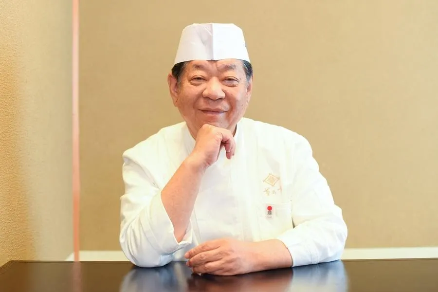
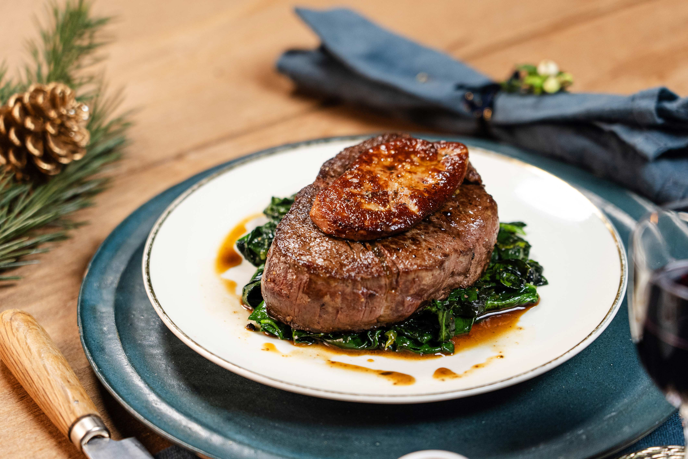

| Hora | Chef | Tema | Boleto |
|---|---|---|---|
| 12:00 | leonor espinosa | Sopa de rascadera | Comprar |
| 15:00 | Yoshihiro Murata | Ichiban Dashi | Comprar |
| 19:00 | Gordon Ramsay | Tournedó Rossini | Comprar |
Sabores de Vanguardia
Disfruta de los mejores sabores de la gastronomía internacional
Reservar TicketHorario de Cartas
Sobre el Festival
Fusión Gourmet es un evento culinario que celebra la innovación y la cocina de autor con experiencias gastronómicas únicas.
Equipo de Chefs
Conoce a los chefs que compartirán sus conocimientos y recetas en el festival.

Leonor Espinosa

Yoshihiro Murata

Gordon Ramsay
Valores del festival
- 🌱 Cocina sostenible
- 🔥 Innovación gastronómica
- 🍽️ Chefs internacionales
Galería Gastronómica

